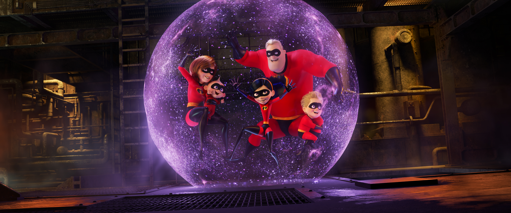
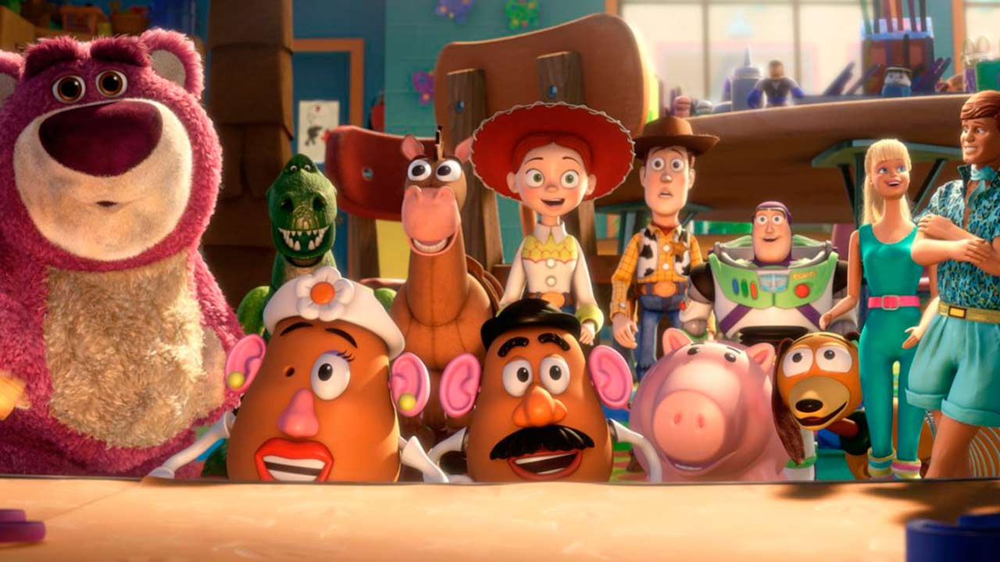
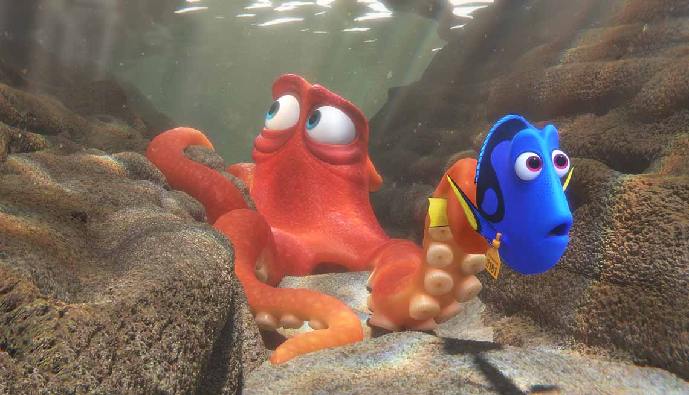
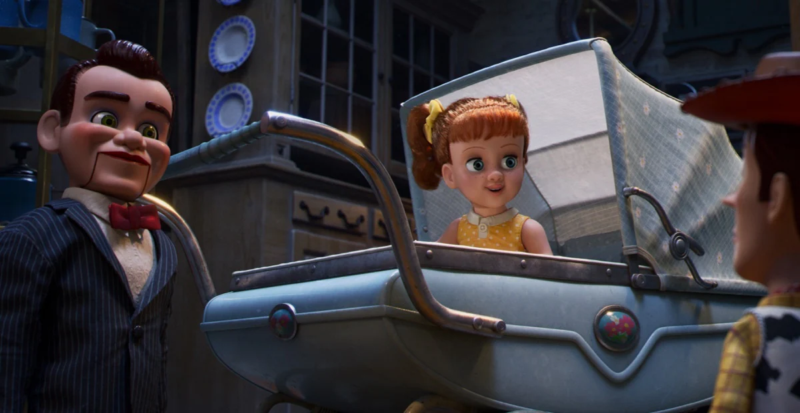

Walt Disney anunció el 24 de enero de 2006 la compra de Pixar mediante una oferta
de canje que supone el valor del los estudios de animación en 7.400 millones de dólares. En ese momente, Walt Disney queria recuperar el trono
en la animación. Gracias a la compra de Pixar y sus exitos recientes de la epoca, como Nemo, Los Increibles y Toy Story pudieron regresar al trono.
Helen es reclutada para ayudar a que la acción vuelva a la vida de los Súper, mientras Bob se enfrenta a la rutina de su
vida diaria "normal" en el hogar. En casa debe lidiar con un bebé que está a punto de descubrir sus superpoderes. Esta película estreno
en cines 14 años despues de The Incredibles. Una espera así de grande ayudó el estudio ganar $1,242.8 millones
de dólares.

Cuando su dueño Andy se prepara para ir a la universidad, el vaquero Woody, el astronauta Buzz y el resto de sus amigos
juguetes comienzan a preocuparse por su futuro y de que haran con ellos. Todos acaban donados a una guardería donde comenzarán una serie de trepidantes y
divertidas aventuras. La película estrenó en 2010 y recaudó $1,067.0 millones de dólares.

Durante esta película, Marlin y su hijo Nemo ayudan a su amiga Dory, que sufre pérdidas de memoria a corto plazo, decide emprender un largo viaje
en busca de sus padres, a los que perdió hace muchos años. Con estreno en el año de 2016, la continuación de Encontrando a Nemo llego a los $1,028.6 millones de dólares.

Cuando el nuevo proyecto casero de Bonnie convertido en el juguete Forky, afirma que es "basura" y no un juguete, Woody demuestra
a Forky por qué debería aceptar ser un juguete. Pero cuando Bonnie lleva a toda la pandilla a la excursión familiar en coche, Woody termina tomando un desvío
inesperado que incluye un reencuentro con Bo Peep. Después de pasar años sola, el espíritu aventurero de Bo y su vida en la carretera desmienten su delicado exterior de porcelana. Woody y Bo se dan cuenta de que sus vidas como juguetes son muy diferentes, pero
lo cierto es que esa será la menor de sus preocupaciones. El final de la saga que empezó con las películas 3D llegó a recaudar $959.3 millones de dólares.
